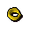
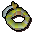
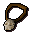
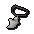

")
Einzigartige Schmuckstücke
Einführung | Der Ring des Charos | Ring der Sichtbarkeit | Ring des Kriegers | Blutrausch-Ring | Ring des Sehers
Ring des Bogenschützen | Amulett der Salve | Gnomen-Amulett | Glarials Amulett | Amulett der Geistersprache | Amulett der Katzensprache
Amulett der Affensprache | Kamulett | Amulett der Präzision | Amulett des Fernkampfs
Ring des Bogenschützen | Amulett der Salve | Gnomen-Amulett | Glarials Amulett | Amulett der Geistersprache | Amulett der Katzensprache
Amulett der Affensprache | Kamulett | Amulett der Präzision | Amulett des Fernkampfs
Einführung
Während ihr in den vielen Gebieten auf RuneScape eure Abenteuer bestreitet, unschuldige Bürger belästigt und hier und da auch mal anderen helft, werdet ihr möglicherweise in den Besitz von einzigartigen Schmuckstücken gelangen. Diese Gegenstände können nicht hergestellt werden. Stattdessen erhaltet ihr sie in der Regel als Belohnung oder als Hilfe für ein Abenteuer.
Ring des Charos (verzaubert)
![[Bild]](../../img/main/kbase/guides/pet/ring_of_charos_unlocked.gif) |
Ihr erhaltet diesen Ring während des Abenteuers 'Fenkenstrains Kreatur' und aktiviert ihn im Abenteuer 'Garten der Stille'.
Der Ring des Charos ist ein uraltes und unzweifelhaft mächtiges Artefakt. Mit diesem Ring werdet ihr in der Lage sein, einfältige Gemüter, wenn auch nur ein wenig, zu beeinflussen, was es euch erlaubt, euer Leben einfacher zu machen oder die ganz Dummen zum Narren zu halten. Der Ring von Charos ist nicht sonderlich nützlich, solange er nicht aktiviert wurde. Aber nach der Aktivierung besitzt er buchstäblich Dutzende Anwendungsmöglichkeiten. Um zu sehen, wann ihr ihn benutzen könnt, sprecht einfach Leute an; wenn eine Chat-Option mit '(Bann)' beginnt, wurde diese Option durch die Macht des Rings von Charos hinzugefügt! Hier sind ein paar Anwendungsmöglichkeiten aufgelistet:
Denkt aber daran, dass es, auch wenn sie hier nicht aufgelistet sind, noch Dutzende weiterer Verwendungsmöglichkeiten für den Ring des Charos gibt. |
Ring der Sichtbarkeit
|  | Ihr erhaltet diesen Ring während des Abenteuers 'Der Wüstenschatz'.
Der Ring der Sichtbarkeit ist ein ausgefallenes Stück magischen Krimskrams, mit dem selbst die ungläubigsten Abenteurer die meisten uralten Geister sehen können. Wenn ihr den Ring der Sichtbarkeit tragt, könnt ihr an bestimmten Stellen auf RuneScape geheimnisvolle Geister sehen. Ihr werdet natürlich ein Amulett der Geistersprache brauchen, um mit ihnen zu reden. Der Ring der Sichtbarkeit ermöglicht es euch außerdem, an einen Satz Geister-Kleidung zu gelangen. |
Ring des Kriegers
|  | Dieser Ring wird von Dagannoth Rex in den Tiefen des Verlieses der Waterbirth-Insel fallen gelassen.
Vor vielen Jahrhunderten zogen die fremennikschen Krieger, ausgerüstet mit ihren besten Rüstungen und teuflischsten Schwertern, in den Kampf gegen die abscheulichen Dagannoth. Sie nahmen auch verschiedene magische Artefakte mit sich, von denen einige bis zum heutigen Tag überdauert haben. Der Ring des Kriegers erhöht euren Angriffs- und Verteidigungsbonus in Schlitzen um jeweils 4. |
Blutrausch-Ring
![[Bild]](../../img/main/kbase/items/rings/bezerker_ring.gif) |
Dieser Ring wird von Dagannoth Rex in den Tiefen des Verlieses der Waterbirth-Insel fallen gelassen.
Der Blutrausch-Ring verleiht euch übermenschliche Stärke und vernebelt eure Sinne, sodass ihr keinen Schmerz verspürt. Die wildesten Krieger der Fremennik haben diese Ringe getragen, um länger gegen die abscheulichen Dagannoth bestehen zu können. Der Blutrausch-Ring erhöht eure Stärke und euren Verteidigungsbonus in Zermalmen um jeweils 4. |
Ring des Sehers
![[Bild]](../../img/main/kbase/items/rings/seer_ring.gif) |
Dieser Ring wird von Dagannoth Prime in den Tiefen des Verlieses der Waterbirth-Insel fallen gelassen.
Dieser mysteriöse Ring verleiht euch gespenstische Kräfte, die er mit den mystischen Pfaden, die RuneScape unbemerkt durchqueren, verbindet. Der Ring des Sehers erhöht euren Angriffs- und Verteidigungsbonus in Magie um jeweils 4. |
Ring des Bogenschützen
![[Bild]](../../img/main/kbase/items/rings/archer_ring.gif) |
Dieser Ring wird von Dagannoth Supreme in den Tiefen des Verlieses der Waterbirth-Insel fallen gelassen.
Fernkämpfer, die danach trachten, einen Pfeil durch die Öse eines Schlüssels aus 200 Metern Entfernung zu schießen, werden ausnahmslos nach dem Ring des Bogenschützen Ausschau halten. Der Ring des Bogenschützen erhöht euren Angriffs- und Verteidigungsbonus in Fernkampf um jeweils 4. |
Amulett der Salve
![[Bild]](../../img/main/kbase/items/amulets/salve_amulet.gif) |
Ihr erhaltet dieses Amulett nach Abschluss des Abenteuers 'Die Geistermine'.
Das Amulett der Salve ist ein Splitter eines Kristalls, als Geissel der Untoten hergestellt aus den Gewässern der Salve. Dank seiner feinen Lichtbrechung zeigt euch der Kristall, wie ihr am besten die Wiederbelebten bekämpfen könnt. Das Amulett der Salve verleiht euch einen erheblichen Bonus im Kampf gegen Untote sowie einen Bonus von 3 in Gebet. Wenn ihr fest entschlossen seid, euch durch Tarns Versteck zu kämpfen, werdet ihr ein Tagebuch finden, in dem erklärt wird, wie ihr das Amulett der Salve sogar noch kraftvoller gegen die Untoten machen könnt. |
Gnomen-Amulett
![[Bild]](../../img/main/kbase/items/amulets/gnome_amulet.gif) |
Ihr erhaltet dieses Amulett nach Abschluss des Abenteuers 'Das Baumgnomendorf'.
Das Gnomen-Amulett besteht aus einem kleinen grünen Edelstein, der mit Schutzmagie verzaubert wurde. Es ist ein Geschenk an diejenigen, die sich als Freunde der Gnomen erweisen. Das Gnomenamulett verleiht euch einen kräftigen Verteidigungsbonus von 13 in Stechen, Schlitzen und Zermalmen. |
Glarials Amulett
|
Ihr stoßt auf Glarials Amulett während des 'Wasserfall-Abenteuers'.
Glarials Amulett ist ein uraltes Artefakt aus längst vergangenen Zeiten. Seine Verzauberungen sind immer noch intakt und können sich neugierigen Abenteuern möglicherweise nützlich erweisen. Glarials Amulett erlaubt es euch, den Baxtorianischen Wasserfall zu passieren, selbst wenn es nur in eurem Inventar ist. |
Amulett der Geistersprache
|  | Das Amulett der Geistersprache erhaltet ihr während des Abenteuers 'Der Ruhelose Geist'.
Einige Priester des Saradomin sind, ob sie wollen oder nicht, ausgerüstet, um sich mit den Geistern der Untoten auseinanderzusetzen. Normalerweise besitzen sie dafür ein Amulett der Geistersprache. Das Amulett der Geistersprache wird es euch erlauben, mit Geistern und ähnlich lebensunlustigen Individuen, mit denen ihr normalerweise nicht kommunizieren könnt, zu sprechen. |
Amulett der Katzensprache
![[Bild]](../../img/main/kbase/items/amulets/catspeak_amulet.gif) |
Das Amulett der Katzensprache erhaltet ihr während des Abenteuers 'Icthlarins Helferlein' und es wird während des Abenteuers 'Zwei Katzen, ein Ausgang' verzaubert.
Das Amulett der Katzensprache ist ein unschätzbares Hilfsmittel für diejenigen unter euch, die eine Katze besitzen wollen. In seiner verzauberten Form kann es sogar dazu verwendet werden, einen von RuneScapes größten Helden aufzuspüren: Bob. Das Amulett der Katzensprache, erlaubt es euch, mit Katzen zu sprechen. Das verzauberte Amulett der Katzensprache ist auch nützlich, um Bob zu finden, indem ihr es in eurem Inventar öffnet. |
Amulett der Affensprache
![[Bild]](../../img/main/kbase/items/amulets/monkeyspeak_amulet.gif) |
Das Amulett der Affensprache erhaltet ihr während des Abenteuers 'Total Banane'.
Ein Amulett der Affensprache ist ein schwer zu beschaffender Gegenstand, da ihr dafür zum entlegenen Affenatoll reisen und den aufmerksamen Affen, die dort lang genug leben, um die Teile für dieses Amulett zusammenzutragen, aus dem Weg gehen müsst. Das Amulett der Affensprache erlaubt es euch, mit den Affen auf RuneScape zu sprechen, auch mit denen, die außerhalb des Affenatolls leben. |
Kamulett
![[Bild]](../../img/main/kbase/items/amulets/camulet.gif) |
Das Kamulett erhaltet ihr am Ende des Abenteuers 'Enakhras Wehklagen'.
Das Kamulett ist eine seltsame Vorrichtung, da meisten Leute nicht der Meinung sind, es wäre sinnvoll, mit Kamelen zu sprechen. Diese Leute hatten aber noch nie eine lange, erfüllende Unterhaltung mit einem dieser Wüstenschiffe. Das Kamulett erlaubt es euch, mit Kamelen und Ugthanki zu sprechen, und es stellt euch einen Teleport zu Enakhras Tempel in der kharidianischen Wüste zur Verfügung. |
Amulett der Präzision
![[Bild]](../../img/main/kbase/items/amulets/accuracy_amulet.gif) |
Das Amulett der Präzision ist eine Belohnung für den Abschluss des Abenteuers 'Die Koboldjagd'.
Das Amulett der Präzision ist ein nützliches Artefakt, dessen Gestalt vor Äonen vollendet wurde. Es glänzt durch seine Vielseitigkeit. Außerdem ist es auch für die meisten jungen Abenteurer einfach aufzutreiben. Das Amulett der Präzision erhöht alle Angriffsboni um 4. |
Amulett des Fernkampfs
|  | Wird von Aquavolten fallen gelassen, die in den Tiefen des Berserker-Verlieses der Fremennik hausen.
Das Amulett des Fernkampfs ist das perfekte Accessoire für Schützen, da es nicht nur elegant aussieht, sondern auch beim Verschießen von Pfeilen und Bolzen hilft. Das Amulett des Fernkampfs erhöht den Fernkampf-Angriffsbonus um 15 und den Magie-Verteidigungsbonus um 10. |
Klickt hier, um mehr Informationen über normale verzauberte Schmuckstücke zu erhalten.

Weitere Artikel in Diverse Anleitungen
|
|
|
Weiterführende Informationen Wenn euch dieser Artikel nicht weitergeholfen hat, könnt ihr in den folgenden Kapiteln der RuneScape-Webseite mehr Informationen finden:
|
|